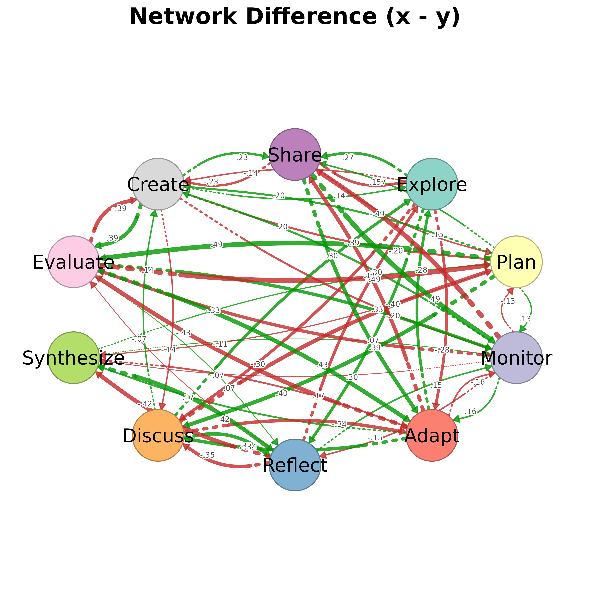

Plots the difference between two networks (x - y) with splot.
Positive differences (x > y) are shown in pos_color and negative
differences (x < y) in neg_color. Node-level differences, such as
initial probabilities, can be shown as donut charts.
Usage
plot_difference(
x,
y = NULL,
i = NULL,
j = NULL,
pos_color = "#009900",
neg_color = "#C62828",
labels = NULL,
title = NULL,
inits_x = NULL,
inits_y = NULL,
show_inits = NULL,
donut_inner_ratio = 0.8,
force = FALSE,
combined = TRUE,
difference = FALSE,
...
)Arguments
- x
First network: matrix,
cograph_network,tna,igraph, list with a matrixweightscomponent, plain list of networks, orgroup_tna. For agroup_tnawith two groups, the groups are compared directly. With more groups andiandjbothNULL, all pairwise comparisons are plotted.- y
Second network, of the same type as
x. Ignored whenxis a list orgroup_tna.- i
Index or name of the first group when
xis agroup_tnaor a plain list.NULLselects the first element, except that all pairs are plotted for agroup_tnaof more than two groups whenjis alsoNULL.- j
Index or name of the second group, with the same rules as
i.NULLselects the second element.- pos_color
Color for positive differences (x > y).
- neg_color
Color for negative differences (x < y).
- labels
Node labels.
NULLuses the row names of the weight matrix, or node indices when there are none.- title
Plot title.
NULLuses"Network Difference (x - y)", or the two group names when they are available.- inits_x
Node values for x (e.g., initial probabilities).
NULLextracts them from a tna object.- inits_y
Node values for y.
NULLextracts them from a tna object.- show_inits
Logical. Show node differences as donuts?
NULL(default) shows them when node values are available for both networks.- donut_inner_ratio
Inner radius ratio for donut (0-1).
- force
Logical. Plot all pairs for a
group_tnawith more than four groups. Without it, such input stops with an error.- combined
Logical. When
TRUE(default) andxis a multi-group input that triggers all-pairs plotting, panels are arranged in a grid viagraphics::par(mfrow = ...).FALSEplots into a layout the caller has already configured (e.g. viapanel_layout()). It has no effect for a single pair.- difference
Logical. If
TRUE,xis treated as an already-subtracted difference network andyis ignored with a warning. Atna_comparisonobject (fromtna::compare()) or anetdifferenceobject is detected automatically and its difference matrix is used.- ...
Additional arguments passed to
splot. They override the defaults set here (layout = "oval",minimum = 0and the TNA or psychometric styling preset).
Value
Invisibly, a list with elements weights (the element-wise
difference matrix x - y) and inits (the node-value
difference, or NULL when no node values were available). For the
group_tna all-pairs path, a named list of such lists with one
element per pair, named "<group_i>_vs_<group_j>".
Details
The weight matrices are subtracted element-wise. Both networks must have the same dimensions and, when present, the same node labels; otherwise the function stops with an error. A directed difference (or tna input) is styled with the TNA preset and an undirected difference with the psychometric preset.
When node values (inits) are given or extracted from tna objects, each node
is shown as a donut whose filled fraction is the absolute difference,
capped at 1, colored pos_color when x is higher and
neg_color when y is higher.
plot_compare() is an alias of plot_difference().
Examples
plot_difference(regulation_net, t(regulation_net))
